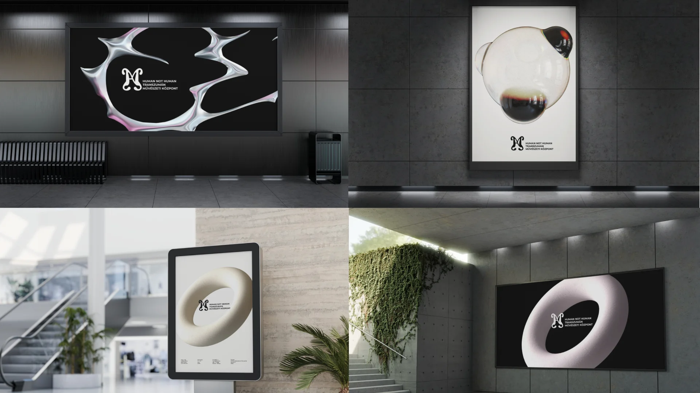
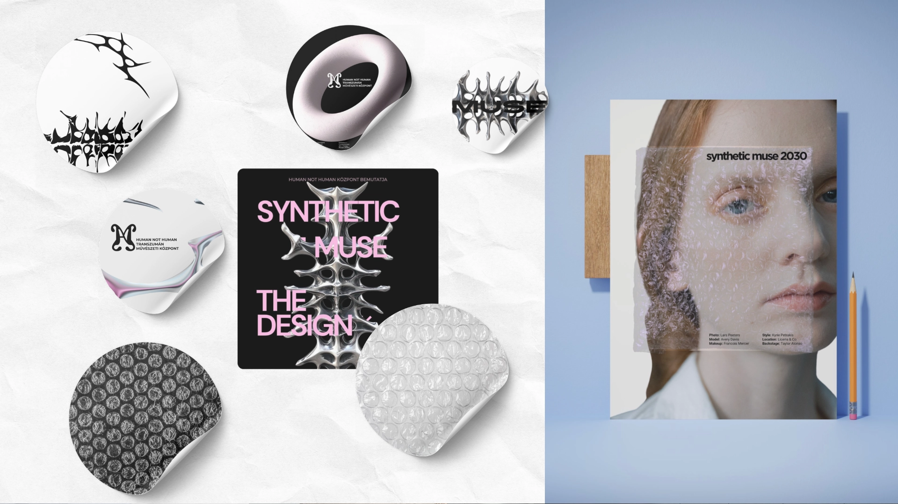
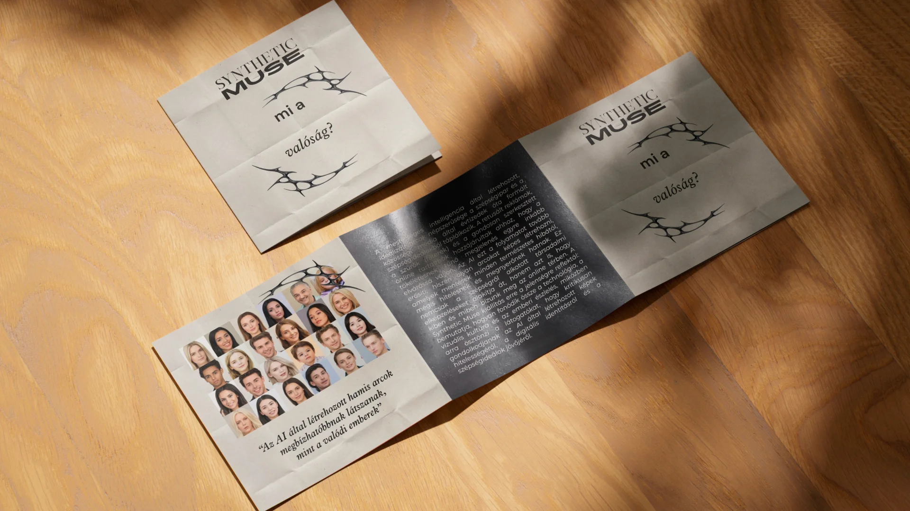
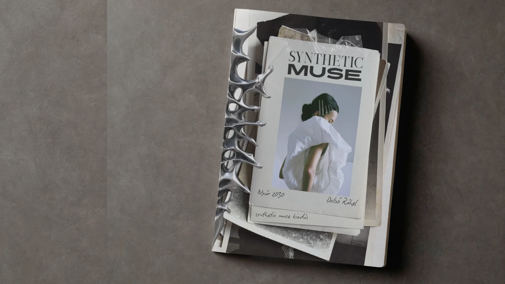

A METAHuman Academy vizuális rendszere a futurisztikus technológiai esztétikát ötvözi egy játékos, űrinspirálta világ minimalista megközelítésével.
A bolygók, pályavonalak, geometrikus formák és élénk színek egységes, modern vizuális élményt teremtenek, amely a kreativitás, a felfedezés, a művészet és a technológia kapcsolatát szimbolizálja.



